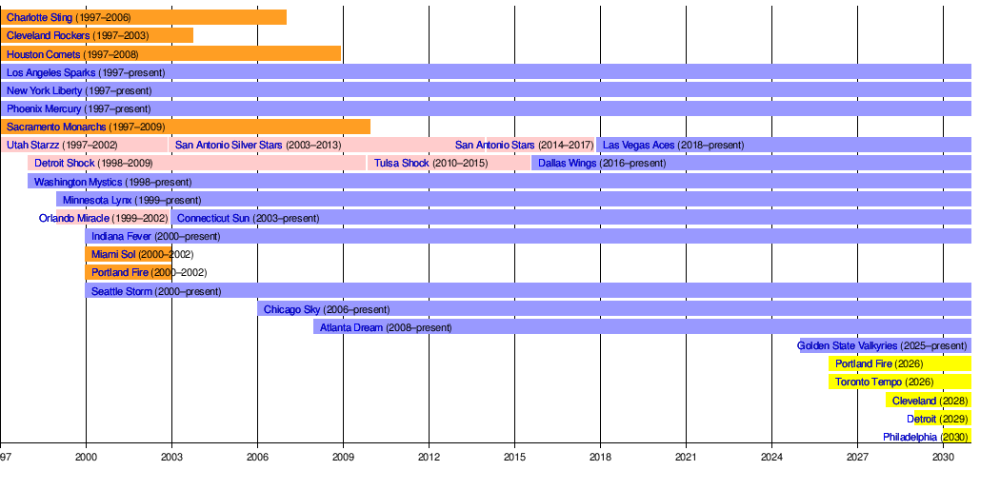

A Brief History of WNBA Expansion

WNBA Expansion Timeline from Wikipedia
We are in a new Era of WNBA Expansion with 6 new WNBA Teams making their debut from the 2025 season until 2030. Golden State absolutely shattered the ceiling of expansion team fees when they were first announced and that bar has been pushed sky high with the announcement of Philadelphia, Cleveland and the return of Detroit.
However, this isn’t the first time the WNBA has expanded so rapidly. At its inception in 1997, the league had 8 original franchises. In the following 3 years, the league doubled in size to 16 teams. Unfortunately, the league has contracted a few franchises since then, however in this new era where teams are being backed with higher cash evaluations there’s strong hope that these teams will stick around. One bright side of the previous expansions is that we have precedence to look back to for what an expansion draft would look like!
Recap of the Golden State Expansion Rules (2024)
The most recent WNBA Expansion Draft occurred just this past year with the welcoming of Golden State. The rules for that draft were as follows:
Existing teams were allowed to protect up to 6 players that would not eligible for selection by Golden State
The Valkyries have the opportunity to select one available player from each of the current 12 teams, or pass on a selection
This includes players currently not under contract such as undrafted signees, and restricted or reserved free agents
Golden State is allowed to select 1 player set to become an unrestricted free agent after the 2024 season and may designate the player as its one core player
Golden State has the right to make any trades with regards to the Expansion Draft including players, player rights and draft picks
Information from WNBA
The Valkyries decided to capitalize on a few of these options. For example, they selected Carla Leite from the Dallas Wings who was an unsigned draftee and Iliana Rupert who was on a contract that was suspended by Atlanta as well as several players on active contracts of varying lengths. Golden State also decided not to pick anyone whose rights were owned/were currently playing for the Seattle Storm. Finally, Golden State decided to capitalize on the opportunity to sign an unrestricted free agent in Monique Billings from Phoenix. They decided not to core her (and pay her the supermax salary) instead agreeing to a normal free agent signing which came at a much lower salary.
One option that Golden State decided not to utilize was the ability to make trades during the expansion draft. I’m sure teams such as New York were very willing to send a draft pick for extra protection, but Golden State felt it was in their best interest to keep the players they drafted. That feeling paid off as they were the first expansion team in WNBA History to make the playoffs in their inaugural season and one of their expansion draft selections Veronica Burton was named the 2025 WNBA Most Improved Player.
There have been past examples of making trades during the expansion draft that have turned out well. During the 2008 expansion draft, the Indiana Fever traded the 2008 No. 24 pick to the Atlanta Dream for the agreement to not select specific unprotected Fever players in the Expansion Draft. In addition, there was a flurry of action after the draft was over as well. Atlanta traded Roneeka Hodges (who they drafted from the Houston Comets) and the 2008 No. 4 pick to the Seattle Storm for Iziane Castro Marques and the 2008 No. 8 pick. Atlanta also traded LaToya Thomas (drafted from the LA Sparks) and the 2008 No. 18 pick to the Detroit Shock for Ivory Latta.
Last Expansion Draft with 2 Teams - 1999
Although the expansion draft with Golden State was just last year, it likely isn’t the best indicator of what is to come this upcoming off-season with Toronto and Portland. For that, I would refer back to the 1999 Expansion draft where the WNBA welcomed in 2 teams: the Orlando Miracle and the Minnesota Lynx. Of note, just like POR/TOR Expansion Draft, the ORL/MIN expansion draft also came just a year after the previous expansion draft.
That being said, it’s impossible to reference the 1999 Expansion and Rookie Draft without first talking about the ABL. The ABL - the American Basketball League - was the rival American Women’s Basketball League to the WNBA. The ABL filed for bankruptcy in 1998 meaning those players were now eligible to be selected in the WNBA Rookie Draft. Because of this game changer, the league opted to select 2 equally skilled players from the ABL and give Minnesota and Orlando each one of those players. To decide, the WNBA opted for a coin flip between the two expansion franchises: the winner of the flip has the option of picking which allocated player they wanted and the 8th pick in the rookie draft or have the first pick in the Expansion Draft and the 7th pick in the rookie draft. The Miracle won the toss and elected to receive Nykesha Sales who eventually made an All-WNBA Team as well as 7 All Star Games. Ironically, the Orlando Magic and Minnesota Timberwolves were both welcomed into NBA expansion at the same time 10 years prior. A coin flip with similar options occurred then, Orlando won the toss and elected to pick the allocated player as well.
Expansion Draft Rules for Minnesota and Orlando were as follows:
Each of the 10 teams currently in the league were allowed to protect 6 players
Minnesota and Orlando would alternate taking picks, no more than 1 player from each team between the both of them (ex: Minnesota and Orlando couldn’t both pick a player from New York)
Minnesota and Orlando can trade for players on active rosters of any of the 10 players in the league. Trading for Draft Picks is not allowed
Trades must be balanced - One player for one player
Information from ESPN:
How this Expansion Draft is Different
Although we have historical precedence, there are of course things that make this Expansion Draft different than anything the WNBA has faced before - the largest of these being the WNBPA opting out of the Collective Bargaining Agreement at the end of the 2025 season. The Players Association had obviously planned to do this well in advance as there are only 2 players (Lexie Brown and Kalani Brown) that are not on rookie contracts that past this season. That means %%%% of players are scheduled to be free agents at the end of this season which severely changes the dynamics behind how many players will be protected by each team.
As mentioned prior, in both 2024 and 1999 Expansion Drafts, existing teams were allowed to protect 6 players. However, in the 2000 Expansion Draft which brought in Indiana, Seattle, Miami and the original Portland franchises, existing teams were only permitted to protect 5 players each until the second round where they were allowed to protect 3 more players. I don’t suspect that we’re in for a multi-round expansion draft with differing amounts of players being protected at different times, however I would be surprised if teams are allowed to protect 6 players again.
Another event worth mentioning with this expansion draft is the upcoming 2026 Women’s Basketball World Cup in Germany. Golden State seemed to catch lightning in a bottle with all of their international players they selected in 2024. That strategy will be hard for the Tempo or Fire to replicate in 2026 because many non-American teams host training camp throughout the summer that players aspiring to play in the World Cup must attend. We saw a few issues this past season with Li Yueru and the Chinese National Team either wanting her to get more playing time or come back to China to prepare for the Asia Cup. I suspect most National Teams will be thinking the same thing due to the early September competition schedule in Germany. Although the path may seem difficult, Portland may attempt to replicate the magic from the Bay Area. The Fire have hired Vanja Černivec as their General Manager away from Golden State. Before spending a season in California, Černivec was most recently the General Manager of the EuroCup Champion London Lions. The Lions - including WNBA Players Temi Fagbenle, Holly Winterburn, Megan Gustafson and Karlie Samuelson - were not expected to win Europe’s second biggest championshp in 2024 but with a well constructed roster from players around Great Britain and the world, they were able to pull off the unlikely upset.
My Predictions
- Make a table with the number of non-UFAs each team has (This includes: players under contract, reserved free agents, restricted free agents, unsigned draftees/draft rights owned, suspended contract expired).
Given the table above, I think the current existing WNBA teams will be allowed to protect less than 6 players/player contracts as was the case in 2025. I would predict 4 or 5.
Given Golden State’s success in Year 1 and the amount of available free agents, I predict Golden State will not be exempt from this upcoming Expansion Draft.
Portland and Toronto will be able to trade any assets for Expansion Draft purposes including trading picks or players for extra protection (same as 2024).
- For example, Toronto could in theory receive Aaliyah Edwards from Connecticut (a player they would otherwise have protected) in exchange for a draft pick and no one else being selected from Connecticut. This would require one of Toronto’s Expansion Draft Picks.
Each existing WNBA team will lose no more than 1 player to the Expansion Draft (same as 2024).
- This means Toronto and Portland will end the Expansion draft with rights to at most 6 or 7 players (same as 1999).
Portland and Toronto will have the 6th and 7th pick of every round in the Rookie Draft (the first two picks outside of the lottery) in some order (same as 2024).
Toronto and Portland may select at most 1 player scheduled to become an Unrestricted Free Agent after the 2025 season (same as 2024). This player may or may not be eligible to be cored depending on if the Core Designation is allowed by the new Collective Bargaining Agreement.
Given that it hasn’t occurred since 1999, I would be rather surprised if the WNBA decides to allocate a player to each of the new expansion franchises though with the massive free agency it is a possibility. That being said, I believe the WNBA may host a coin flip (similar to 1999) where one team gets the choice between higher Rookie Draft Picks or an extra player in the Expansion Draft given that there were an odd number of teams in the WNBA in 2025.